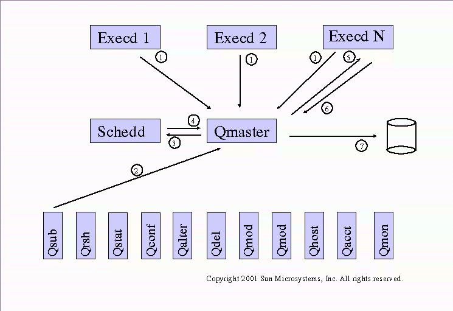

This document describes the Grid Engine source code modules, and is written for use by software developers. Our goal is to provide you with useful information if you are considering participating in the Grid Engine project or will be using Grid Engine source code. In addition to this source documentation, the user product documentation is necessary for a full understanding of the functional operation of the software. Consequently the man pages are referred to herein where appropriate. See also the directory structure.
Note: This information is typically old, and may be out-of-date or completely obsolete in some cases.
If you have problems with finding functions or browsing through the source code we suggest the use of grep or preferably ctags/etags (see source/scripts/make-tags.sh).
The job life cycle is a good way to understand the overall system.

In the "source/daemons" subdirectory there is one directory for each daemon.
The Qmaster (Queue Master) controls the overall behaviour in a cluster. The Qmaster is the responsible for answering GDI requests from clients and for delivering dispatched jobs to the assigned Execds. The scheduler component was formerly a separate daemon schedd, but is now a thread in qmaster.
The Execd (Execution Daemon) provides Qmaster with information about utilization and availability of resources. Each job sent to Execd by Qmaster is started by writing all relevant information into a couple files describing the job and forking a Shepherd. After Shepherds termination Execd reports details about the job run back to Qmaster.
The Shepherd starts all kinds of jobs according to what he finds in the per-job configuration files written by Execd. If necessary administrator supplied procedures are started before the job is started (prolog, PE start-up), during job run (checkpoint/migrate, terminate/suspend/resume) and after job termination (PE shut-down, epilog).
The Shadowd (Shadow Daemon) detects failures of the Qmaster and starts a new Qmaster if necessary.
In the "source/clients" subdirectory there is one directory for each client. Clients follow a general implementation.
Qsub combines all information provided with the command line and in per-cluster or per-user default settings files in a job object and sends the job via GDI to Qmaster. As response Qsub receives a job ID and prints it.
Qrsh combines all job relevant information in a job object like Qsub does and sends it as an interactive job via GDI to Qmaster. For stdin/stdout/stderr redirection rsh command is forked by qrsh. The rsh command cooperates with the rshd forked by shepherd for jobs of that type. Instead of rsh/rshd also other commands can be used.
Qmon is a Motif GUI allowing to administer and monitor the system but also to submit and monitor jobs. Qmon uses GDI to retrieve from Qmaster the whole configuration and to change it. See also the images preview.
Qdel uses GDI to initiate job termination.
Qacct produces accounting reports by scanning the accounting data file.
Qlogin invokes an interactive login session in the current terminal using GDI.
Qresub creates a copy from an existing job using GDI.
Qselect prints a list of queues matching the specified criteria from the command line. The necessary information about the clusters configuration is fetched from Qmaster using GDI.
Qalter modifies an already submitted job using GDI.
Qhold puts a hold on a job using Qalter.
Qhold releases a hold from a job using Qalter.
Qsh submits an interactive X-windows session job using GDI.
Qconf allows to add, delete, modify and view the configuration of all kind of configuration objects. Qconf uses GDI to do this.
Qhost shows the current status of all hosts in the cluster based on information retrieved using GDI.
Qstat shows the current status of all queues in the cluster based on information retrieved using GDI.
Qmod allows to modify the state of queues and jobs by using GDI.
In the "source/libs" subdirectory there is one directory for each library.
This low level library provides functionality to run daemons in a monitoring mode.
A low level library with several utility functions. This library bases on functionality of librmon.
The generic list library which is used in nearly all components of the system. The cull library bases on functionality of libuti and librmon.
The communication library is based on librmon.
The Gridengine Database Interface library provides methods to retrieve, add, delete and modify all internal objects hosted by the Qmaster. The GDI library bases on libcomm and libcull.
This library contains many important high-level functions mainly used by Schedd. Some of them however have turned out to be very helpful also in other clients like Qstat, Qhost or qmon and also in Qmaster.
This library contains the definition of Grid Engine object types (e.g. the job datatype JB_Type) and access functions (e.g. job_is_parallel). Grid Engine objects are CULL objects, see libcull.
The event client interface allows a client to register at qmaster and receive events about changes in the system more user friendly than with polling.
This library contains code providing the master side of the event client interface. It is currently used in qmaster to serve event clients but could be used to build any event server, e.g. an event caching / proxy component.
The mirror interface provides a mechanism to mirror the data held in qmaster, e.g. the job list or the queue list. It is based on the event client interface.
The job API interface (JAPI) provides a to-the-point interface providing those operations typical Grid Engine end users depend upon. That is submission of jobs, enquire and control of job status, synchronizing with jobs end as well as examining how a job finished. Operations required to administer Grid Engine are not covered by JAPI. This library bases on functionality of libgdi and libevc.
The DRMAA library is an implementation of the DRMAA C binding standard based on Grid Engine. The purpose of DRMAA is to provide an interface that facilitates integration of applications with DRM systems such as Grid Engine in a DRM system independent fashion. The DRMAA library is kept in the libs/japi subdirectory due to the close relationship with JAPI. See also the DRMAA job state table.
Java admin API introduction and documentation
The "source/3rdparty" directory contains modules with different licenses than SISSL.
This client is a GNU make enhanced with transparent remote execution. The implementation of transparent remote execution bases on a forked 'qrsh -inherit' command.
This client program is an extension to the popular csh(1) derivative tcsh. The implementation of transparent remote execution bases on libgdi.
Generates Make dependencies during building
This directory is the home of rsh, rshd, rlogin.
The "source/utilbin" directory contains binaries that are needed during installation of Grid Engine, for diagnosis purposes or for the job samples.
The "source/dist" directory contains files and directories which are part of a Grid Engine distribution.
Scripts needed for building and installation
The "source/security" directory contains modules handling security in various ways.
Each subdirectory of the "source/experimental" directory contains an experimental module. Those modules cannot be expected to work - although some may, at least with a bit of work. The experimental modules are provided here for information purposes mainly and may be helpful if you plan to enhance Grid Engine in a direction similar to one of the modules. Some also can be a valid starting point for such an effort.